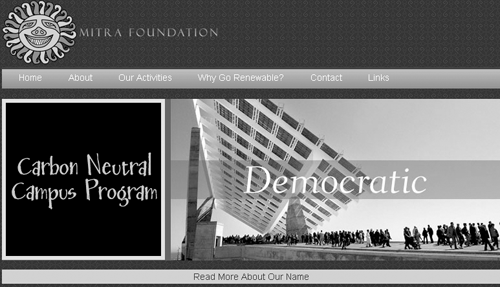
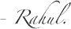

Announcing: the Mitra Foundation website
posted 14 November 2006
so, the Mitra Foundation has an online home now.
An Overview
Mitra Foundation is a non-profit organisation which promotes alternative energy choices. Shailendra and Seema had seen the CFL site, and asked me to help them out with their website.
The first step was to identify the intended audience for the website. Three groups were identified:
- Students and educators
- Businesses interested in promoting alternative energy choices
- People working in the public sector
The site needed to include content relevant to all three groups, without losing focus. Fitting all this information into a single, holistic structure had me a bit puzzled, but I think that the final layout has managed to keep the focus of the different areas while maintaining uniformity.
Working with the colours on this site was quite a lot of fun - there's plenty of it and fairly unusual ones too. Brown seems to be big this year, and I think it works well here. Yellow, blue, green; all of these find a place.
With the Mitra Foundation site, I've moved away from a strictly ‘fixed-width’ layout, to an ‘em-based’ layout. An ‘em’ is a unit of measurement which is relative to the text size, so if you change the text size on any of the pages, the whole layout becomes larger (or smaller), and the page maintains it's proportions. Try it!
The finished homepage structure
Microformats
The site also sports microformats, on the Contact page.
Microformats are, from the microformats.org page:
Designed for humans first and machines second, [...] a set of simple, open data formats built upon existing and widely adopted standards.
This increases the semantic value of the page, and theoretically leaves it open to being used in mashups, perhaps a global directory of non-profits will be able to quickly extract all the contact details and so on just by going through the code.
Here, I've used microformats to put in contact information for the Foundation, as an hCard. If you have the Firefox Tails add on, you'll notice that it lights up if you're on the contact page, and you can save the Foundations address, telephone number and email directly into your address book. Not bad for a coupla lines of code, eh?
Finally...
Congratulations to Shai, Seema and Adarsh, over at Mitra! I've had a blast working with them on their website, and I think they've been pretty happy with it too.
